福岡である。
福岡市西区。
福岡市、とはいえ半分糸島市に足を突っ込んだような場所である。
近所には九州大学の新キャンパスもあったりして随分色々何か大変な事になっとりますな。
そんな場所に墓石が投棄されているという噂を聞きつけ、行ってみる事にした。
場所は糸島半島の東側、
今津干潟と呼ばれる入江の一角。
瑞梅寺川が今津湾に流れ込む河口で多くの鳥が渡ってくる。
＆カブトガニの産卵地としても有名な干潟だ。
そんな干潟に行ってみる。
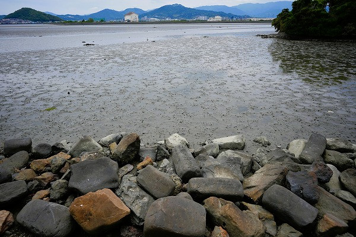
訪れたのは干潮時で、普段は水没している海底が半分露出している状態であった。
干潟ではムツゴロウ的な魚やカニなどが泥の中から出たり入ったりして干潟にポコポコ小さな穴が開いていた。
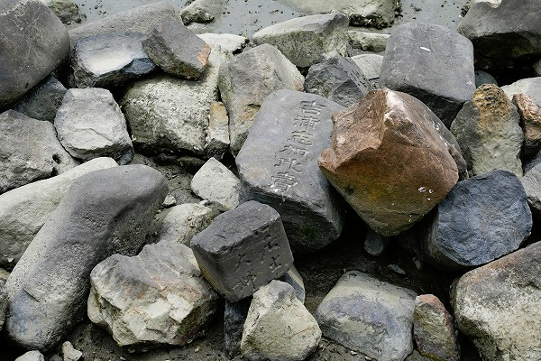
干潟の手前には多くの石が積まれていた。
恐らく堤防を保護するためのものと思われる。
しかし、よーく見ると。
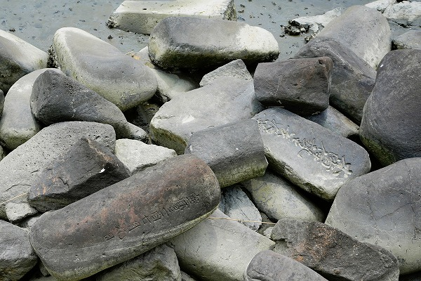
何やら文字が刻まれているではないか。
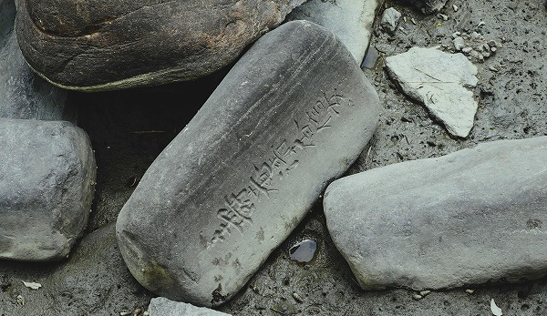
これが噂の墓石なのだ。
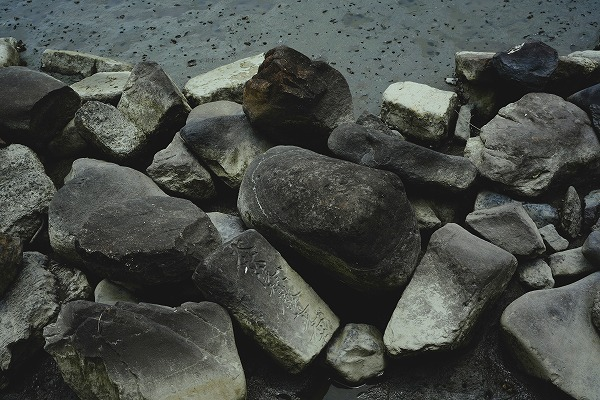
この墓石は半世紀以上前に設置されたものだという。
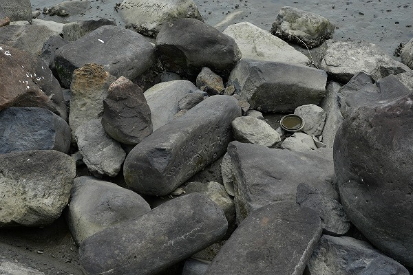
糸島市にあった無縁墓を転用したようだ。
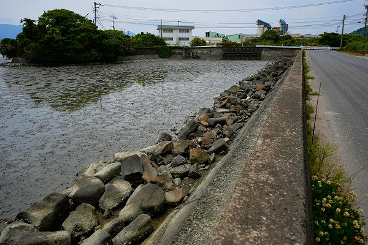
随分前になるが、この墓石は一時九州方面の新聞やメディアで墓石の不法投棄！、という見出しで報道がなされていた。
しかし過去の新聞やメディア等を調べてみると真偽は判らないのだが、実際のところ
不法投棄ではないようだ。
どちらかというと魂抜きをした墓石はただの石だから護岸に使っちゃえ、という事らしい。
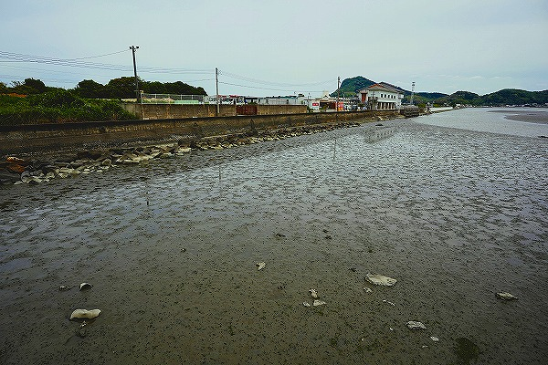
現代人の感覚で言うと魂抜きしてあるとはいえ戒名が刻まれている墓石を海中に投棄するなんて…と思われるだろう。
しかし高度経済成長期には使えるものは何でも使え！という「いてまえ精神」は昭和世代の私には判らなくもない。
実際、無縁の墓石や台石を再利用して石垣を組んだお寺などは日本全国で見ているもの。
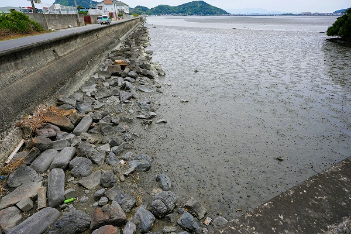
消波ブロック代わりに投入された石は50メートルほどに及ぶ。
その半分近くは墓石のようだ。
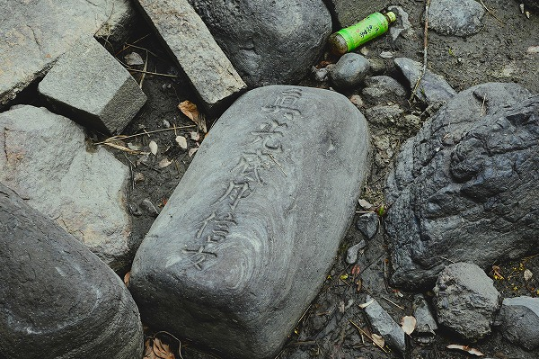
墓石、と言えば四角い石を思い浮かべるが、ここの墓石はほとんど
丸みを帯びた石である。
荒波がバッシャーン！と叩きつける外海なら「ああ、波に削られたのね」とも思うが、いかんせんここは波のひとつもない穏やかな入江。
最初からこのような形状の面取りをしてない自然石に近い状態の墓石だったのだろうか。
それはそれで興味深い。
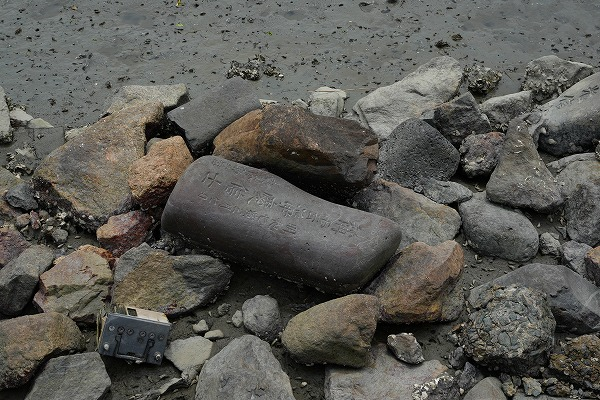
明和7年、とある。
今から250年前の墓石だ。
他にも宝暦、文政といった文字が確認できた。
完全に水没している墓石には貝が貼り付いている。
具体的にここに墓石が投入された経緯は判らないが何とも侘びしい光景である。
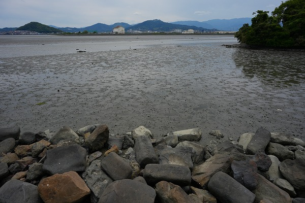
この日は御覧の通りどよ～んとした天候であった。
まさに私の心中そのまま、だったよ。